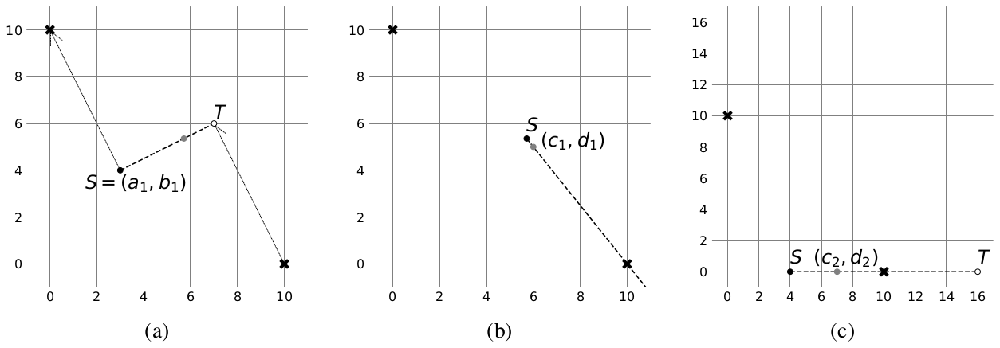

Can You Reach There?
You are given \(n\) distinct marked points on a 2D plane, numbered from \(1\) to \(n\). Marked point \(i\) has coordinates \((x_i, y_i)\).
In this problem, you are given \(q\) scenarios, numbered from \(1\) to \(q\). In each scenario \(k\), four integers \(a_k\), \(b_k\), \(c_k\), and \(d_k\) are given, indicating that you initially stand at \((a_k, b_k)\) and aim to reach \((c_k, d_k)\) by repeating the steps described below any number of times.
In a single step, you choose two marked points \(P\) and \(Q\), which may be identical. Let \(S\) denote the point where you are currently standing, and define a point \(T\) by
\[ \overrightarrow{PT} = \overrightarrow{SQ}. \]In other words, \(T\) is chosen so that the vector from \(P\) to \(T\) has the same direction and length as the vector from \(S\) to \(Q\). You may then move to any point on the segment \(ST\), including the point \(T\) itself, and you will stand at that new point.
For each scenario, determine whether the objective can be achieved using the described steps. Note that all scenarios are independent of each other.
Input
The first line of input contains two integers \(n\) and \(q\) (\(1 \le n \le 100\,000\), \(1 \le q \le 100\,000\)). The \(i\)-th of the next \(n\) lines contains two integers \(x_i\) and \(y_i\) (\(0 \le x_i, y_i \le 10^9\)). The input guarantees that no two marked points have the same coordinates.
The next \(q\) lines represent the scenarios. The \(k\)-th of these lines contains four integers \(a_k\), \(b_k\), \(c_k\), and \(d_k\) (\(0 \le a_k, b_k, c_k, d_k \le 10^9; (a_k, b_k) \ne (c_k, d_k)\)).
Output
Output \(q\) lines. The \(k\)-th line should contain yes if the objective of scenario \(k\) is achievable, or no otherwise.
2 4 10 0 0 10 3 4 6 5 4 0 7 0 4 0 16 0 123 456 789 0
yes yes yes no
Explanation for the sample input/output #1
There are two marked points \((10, 0)\) and \((0, 10)\). In scenario \(1\), starting from the point \(S = (a_1, b_1) = (3, 4)\), the objective is achieved as follows:
- In the first step, choose \((10, 0)\) as \(P\) and \((0, 10)\) as \(Q\). A point \(T\) is determined with coordinates \((7, 6)\). Move to a point \((40/7, 75/14)\), which lies on the segment \(ST\). (Figure M.1 (a))
- In the next step, choose \((10, 0)\) as both \(P\) and \(Q\). A point \(T\) is determined with coordinates \((100/7, -75/14)\). From there, you can reach the point \((c_1, d_1) = (6, 5)\). (Figure M.1 (b))
In scenario \(2\), you start from \(S = (a_2, b_2) = (4, 0)\). Choose \((10, 0)\) as both \(P\) and \(Q\). A point \(T\) is determined with coordinates \((16, 0)\). The point \((c_2, d_2) = (7, 0)\) is on the segment \(ST\), allowing you to reach there in a single step. (Figure M.1 (c))
In scenario \(3\), the objective is similarly achievable.
In scenario \(4\), it can be shown that reaching the point \((c_4, d_4) = (789, 0)\) from \((a_4, b_4) = (123, 456)\) is impossible.
